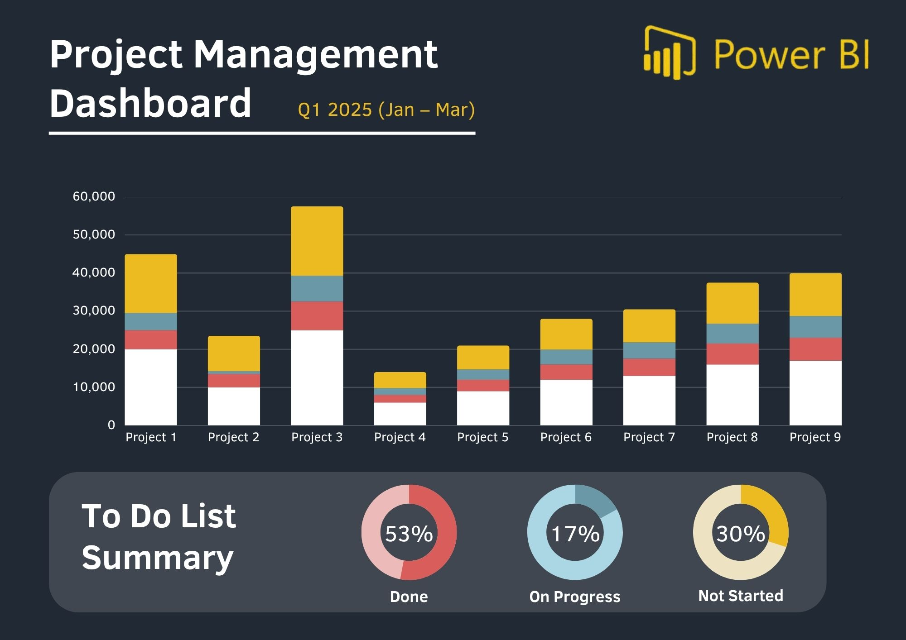

Dashboard de Ventas
Análisis Interactivo con Power BI
Dashboard interactivo para análisis de ventas y rendimiento por región, canal y producto, con KPIs dinámicos y visualizaciones profesionales.

📋 Descripción del Proyecto
Este proyecto consiste en un dashboard profesional de Power BI diseñado para proporcionar insights accionables sobre el rendimiento de ventas de una organización. El dashboard permite a los usuarios explorar datos de ventas desde múltiples dimensiones y tomar decisiones basadas en datos en tiempo real.
🎯 Objetivos del Dashboard
- Monitoreo de KPIs: Visualizar métricas clave como ingresos totales, unidades vendidas, margen de beneficio y tasa de conversión
- Análisis Temporal: Identificar tendencias de ventas por día, semana, mes, trimestre y año
- Segmentación Geográfica: Comparar el rendimiento por región, país, ciudad o zona de ventas
- Análisis de Productos: Identificar los productos más y menos rentables, y analizar el mix de productos
- Análisis de Canales: Evaluar el rendimiento de diferentes canales de venta (online, retail, B2B, etc.)
⚙️ Funcionalidades Principales
1. Vista Ejecutiva (Overview)
- KPIs principales en tarjetas destacadas (Ingresos, Margen, Unidades, Clientes)
- Gráfico de tendencia de ingresos vs. objetivo
- Comparación year-over-year (YoY) y month-over-month (MoM)
- Indicadores de rendimiento con código de colores (verde/amarillo/rojo)
2. Análisis por Región
- Mapa interactivo con heat map de ventas por ubicación
- Ranking de top regiones por ingresos y crecimiento
- Gráficos de barras comparativos entre regiones
- Filtros para drill-down por país → estado → ciudad
3. Análisis de Productos
- Tabla con ranking de productos por ventas
- Gráfico de dispersión: Margen vs. Volumen de ventas
- Análisis ABC de productos (clasificación Pareto)
- Tree map para visualizar contribución al revenue
4. Análisis de Canales
- Gráfico de dona mostrando distribución de ventas por canal
- Comparación de márgenes por canal
- Análisis de customer journey multicanal
5. Análisis Temporal
- Gráfico de líneas con ventas históricas
- Análisis de estacionalidad (patrones mensuales/trimestrales)
- Pronósticos con líneas de tendencia
- Comparación de períodos personalizados
🛠️ Tecnologías y Herramientas
Herramientas de BI
- Power BI Desktop - Diseño del dashboard
- DAX - Cálculos y medidas personalizadas
- Power Query - ETL y transformación de datos
- Power BI Service - Publicación y compartición
Fuentes de Datos
- SQL Server - Base de datos transaccional
- Excel - Archivos complementarios
- CSV - Datos de catálogos
📊 Medidas DAX Destacadas
Ejemplos de algunas medidas calculadas implementadas:
// Ingresos Totales
Total Revenue = SUM(Sales[Amount])
// Crecimiento YoY
YoY Growth =
DIVIDE(
[Total Revenue] - CALCULATE([Total Revenue], SAMEPERIODLASTYEAR(Calendar[Date])),
CALCULATE([Total Revenue], SAMEPERIODLASTYEAR(Calendar[Date])),
0
)
// Margen de Beneficio %
Profit Margin % = DIVIDE([Total Profit], [Total Revenue], 0)
// Ranking de Productos
Product Rank = RANKX(ALL(Products[ProductName]), [Total Revenue],,DESC,DENSE)
💡 Insights Clave Obtenidos
- Estacionalidad: Identificación de picos de ventas en Q4 (temporada navideña), permitiendo optimizar inventario
- Productos Estrella: El 20% de productos genera el 80% de los ingresos (Principio de Pareto validado)
- Canales Rentables: Canal online tiene menor margen pero mayor volumen; canal B2B mayor margen pero menor conversión
- Regiones de Crecimiento: Identificación de mercados emergentes con alto potencial (crecimiento >30% YoY)
- Oportunidades: Productos con bajo volumen pero alto margen → candidatos para campañas de marketing
🎯 Impacto del Proyecto
| Área de Impacto | Resultado |
|---|---|
| Tiempo de generación de reportes | Reducción del 70% (de horas a minutos) |
| Decisiones basadas en datos | Incremento del 40% en uso de analytics |
| Visibilidad de KPIs | Acceso en tiempo real vs. reportes mensuales |
| Detección de oportunidades | Identificación proactiva de tendencias |
🚀 Próximas Mejoras
- Integración con API de CRM para datos de clientes en tiempo real
- Análisis predictivo con Machine Learning (forecast de ventas)
- Alertas automáticas cuando KPIs caen bajo umbrales
- Dashboard móvil optimizado para ejecutivos
- Integración con Power Automate para reportes automatizados